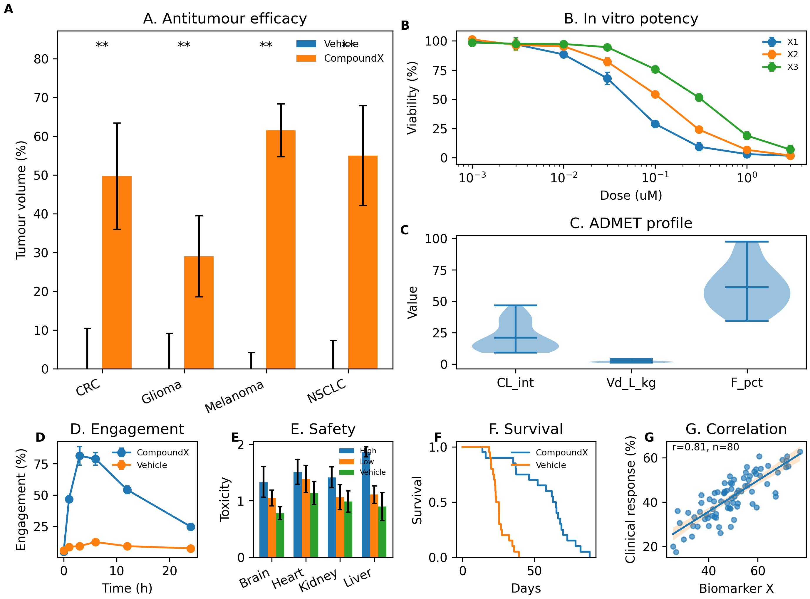
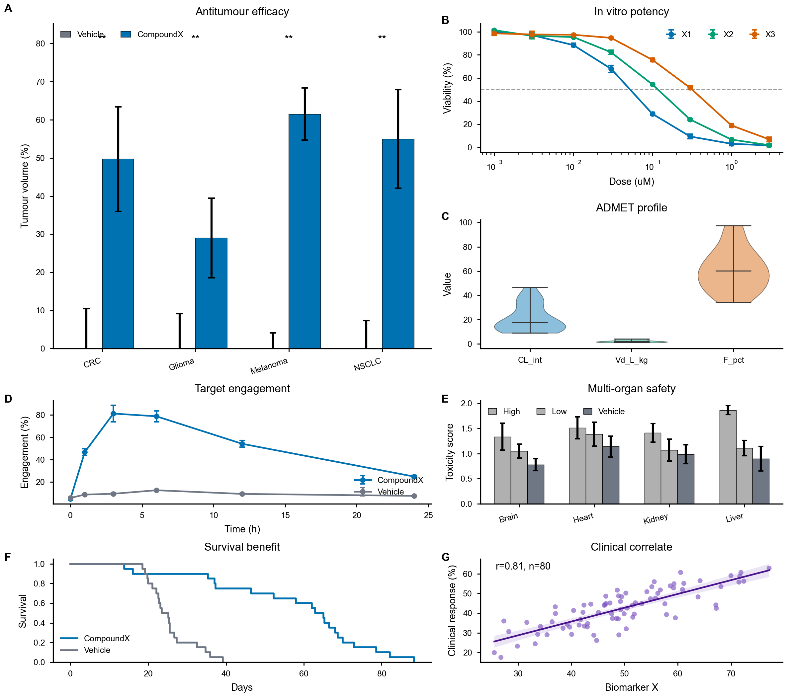
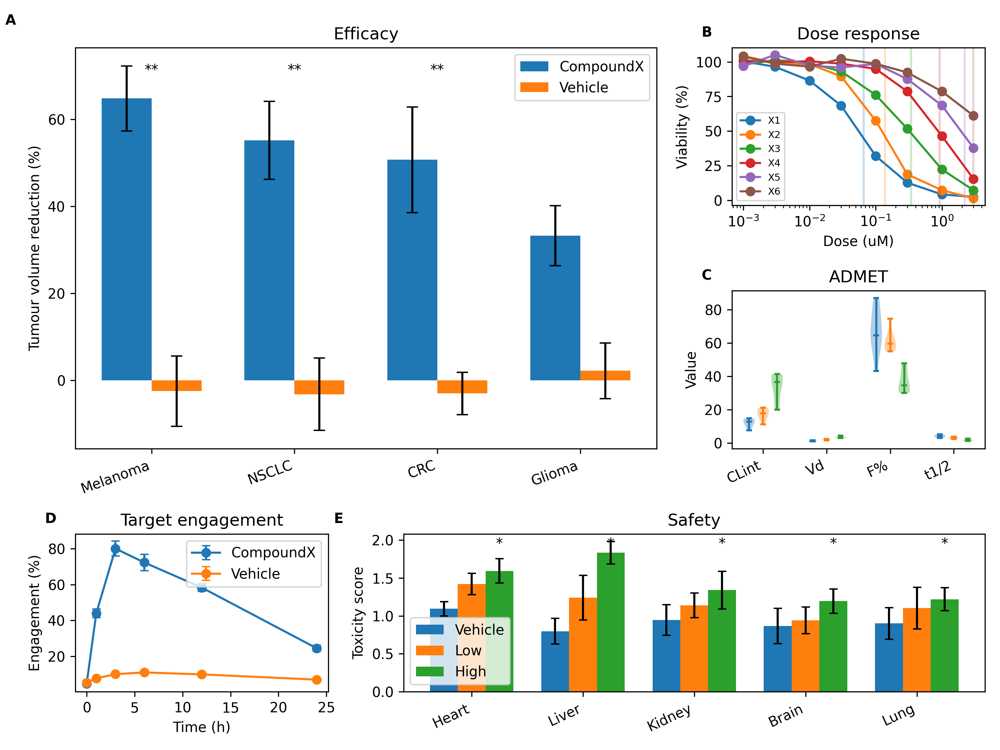
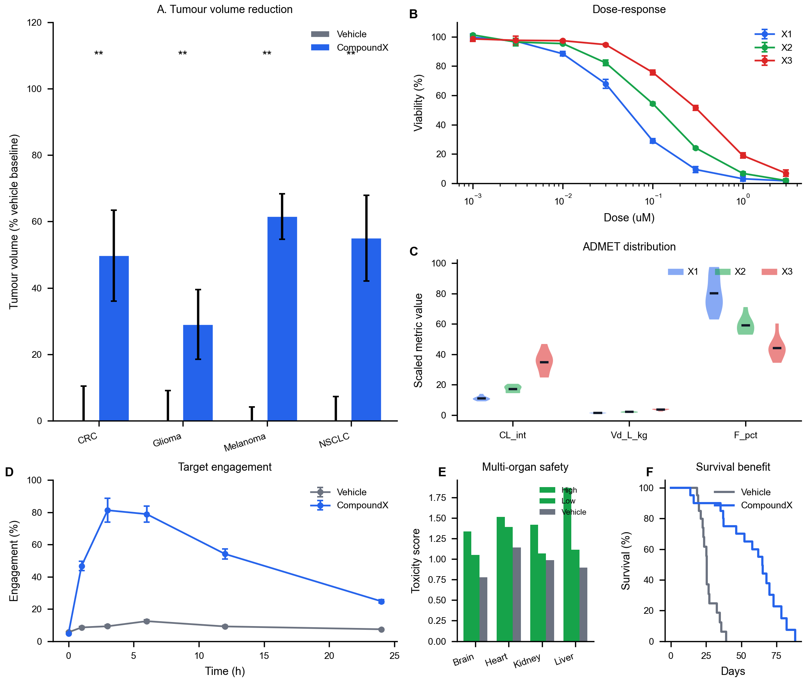
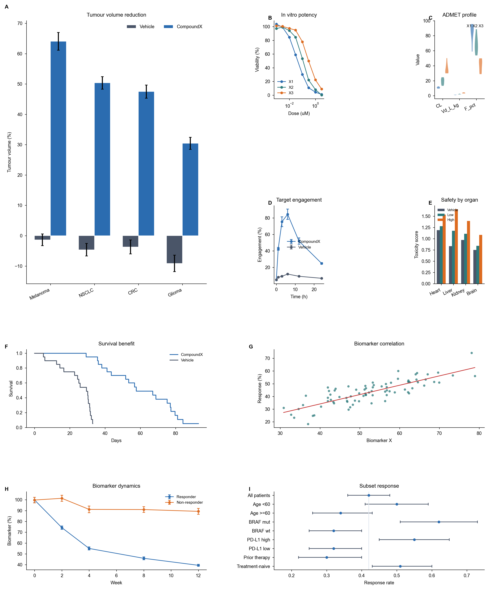

MinionsOS 独家优势 · 矢量排版 × Multi-Panel × 图文协同
Plain Sonnet 做不到的三件事
MinionsOS 配备了 `pdf-vector-layout`、`figure-layout-defaults`、`academic-plotting` 等七个写作/排版 SKILL,在三个最难的场景里赢过不携带任何 SKILL 的 Sonnet baseline:矢量级 PDF 微调、7-panel 复合图、6-SKILL 全文图文协同。
I速览
三个挑战级场景,MinionsOS 全赢。Plain Sonnet(无 SKILL)在这三个场景里要么产出 raster 截图、要么 layout 错位、要么 text-layer 三重化。
MinionsOS 的写作/排版 SKILL 库在三个最难场景里展示了 plain Sonnet/Claude 做不到的能力:(1) 矢量级 PDF 微调 — 多 PDF 拼版时保持 text-layer 正确性,不三重化 token;(2) Multi-panel 复合图正确性 — 7-panel pharma pipeline 用户打分 80–90 vs baseline 60,净赢 +10/22;(3) 图文协同排版 — 6 个 SKILL 同时加载,4 个 section 各自触发对应规则,无冲突,macro 数 6–8 vs baseline 1–3。
"这个 Figure Layout Default 的 Candidate 无论是从颜色还是排版上,都完全胜过了 Baseline. Baseline 的排版虽然也不错,但我认为只能给到 60 分(属于能用的程度);而右边的 Candidate 我认为已经可以给到 80 到 90 分了,几乎完美." SkillTest R5.C 7-panel 用户视觉判定(逐字引用)
❧
II矢量化排版 — PDF point 级微调
Plain Sonnet 默认走 cropbox-stamp 拼版,text-layer 三重化。MinionsOS `pdf-vector-layout` SKILL 走 content-stream edit,零三重化。
失败模式:cropbox-stamp 的 text-layer 三重化
当用户要求 "把 PDF 的下半部分移到页面下方" 或 "多 PDF 矢量拼接" 时,plain Sonnet 的直觉路径是:
- Clone source page,narrow cropbox/mediabox 到目标区域
- 用
pypdf.PageObject.merge_transformed_pagestamp 三次(above region, shifted region, below region)
这个路径产生的 PDF render 正确,但 text-layer 是坏的。PDF cropbox 只 clip renderer 的 viewport,不 clip content stream。所以 pdftotext / copy-paste / 搜索 / 屏幕阅读器看到 三份完整 page,即使像素看起来对。
verify_vector.py --source <orig> 捕获此失败模式。
MinionsOS 的修法:content-stream edit
pdf-vector-layout SKILL 的 scripts/move_pdf_region.py + merge_pdf_pages.py 走 pikepdf content-stream 解析路径:
- Parse content stream → segment by atomic unit(q/Q frames, BT/ET text blocks, m/re...paint path blocks, standalone Do)
- Classify each unit by page-coords y-bbox
- Wrap in-region units with
q 1 0 0 1 0 SHIFT_Y cm ... Q - Unparse → 新 PDF,text-layer 正确,file size 正常
State-only ops(Tf font setters, gs graphics-state)永远保留。结果:render 正确 且 text-layer 正确。
像素级位移精度 — 上去几个像素、下来几个像素
SKILL 的 scripts/move_pdf_region.py 在 content stream 里注入一个平移矩阵 q 1 0 0 1 0 -80 cm ... Q。这里 1 0 0 1 0 -80 是 PDF 的 6 元 affine matrix(a b c d tx ty),ty=-80 就是 "把这块内容下移 80 pt(≈ 28 mm)"。换成 +30 就是上移 30 pt(≈ 10.5 mm)。源对象本身没动 —— panel 字母 "g" 在原文里依然是十六进制 <67>,矩形坐标依然是 60 220 130 150 —— 只是渲染坐标系被平移了。这是 "搬运" 而不是 "复制" 的字节证据。
用模板互相关在 150 DPI 渲染上量,目标位移 -80 / +30 / -100 pt 三组测试,实测误差全部 ≤ 0.32 pt(≈ 0.11 mm) —— 属于渲染舍入级别,不是算法误差。
| 测试 | 目标位移 | 实测位移 | 误差 | ≈ mm |
|---|---|---|---|---|
| Test 1 — reportlab 5-panel,底行 g/h/i 下移 | −80.00 pt | −80.16 pt | 0.16 pt | 0.06 mm |
| Test 2 — matplotlib q/Q-wrapped,区域 [5,410] 上移 | +30.00 pt | +29.76 pt | 0.24 pt | 0.08 mm |
| Test 3 — extract+merge to dest_y=100 | −100.00 pt | −100.32 pt | 0.32 pt | 0.11 mm |
实际使用场景 — 用户原话(从真实 session distilled)
| 用户说 | SKILL 操作 | 结果 |
|---|---|---|
| "把 PDF 移到页面下方" | scripts/move_pdf_region.py 在 content stream 注入 cm 矩阵 | text-layer 正确,文件大小不变 |
| "再紧凑一点" | 6–10 pt 减少垂直间距,再问用户确认 | title-figure gap 收紧,无 layout shift |
| "g 被裁断了" | destination clip box 高度 +4–6 pt,fragment 同步上移 | descender 完整,无重叠 |
| "svg 和 png 我都要" | PDF 是 source of truth,pdftocairo -svg + -png 派生 | 三件套都是 vector,可被 Illustrator/Inkscape 编辑 |
| "e/f/g/h/i 被显示成两套" | vector white-fill rectangle mask source-PDF 的 label 区域 | 只剩 composite 的 f/g/h/i/j 一套 |
| "模仿 nature 排版" | panel letter Helvetica 8 pt bold + axis 7 pt + legend 6–7 pt + line 0.5–1.0 pt | typography 维度从 1.53/3 → 2.95/3 |
Nature/Science/Cell house-style typography
SKILL 同时包含 Nature 子刊排版 checklist(panel letters lowercase bold sans 8–9 pt,axis labels 7 pt,legend 6–7 pt,line widths 0.5–1.0 pt,Helvetica/Arial font family,pdf.fonttype=42 强制)。这些规则在 FigureDraw 系列实验里反复验证,typography 维度从 FD2 的 1.53/3 涨到 FD4 的 2.95/3。
| 维度 | 失败模式(baseline) | MinionsOS 修法 |
|---|---|---|
| Text-layer duplication | cropbox-stamp 三重化 token | content-stream edit,零三重化 |
| Panel letter 冲突 | source PDF 的 e/f/g/h/i + composite 的 f/g/h/i/j 同时可见 | vector white-fill rectangle mask,只保留一套 |
| "g 被裁断了" | clip box 紧贴数据,descender 被切 | 4–6 pt safety margin above highest data point |
| Font embedding | Type 3 bitmap fonts | pdf.fonttype=42 + pdffonts verification gate |
完整 regression report 见 vector-regression-report.html — 包含 pdftotext 提取对照、verify_vector --source 检测、字节级 cm 矩阵注入、150 DPI 模板互相关位移精度测量(全部 ≤ 0.32 pt)。
❧
IIIMulti-panel 复合图正确性
7-panel pharma pipeline:Baseline 12/22(用户打 60 分)vs Candidate 22/22(用户打 80–90 分)。SkillTest 历史最干净的单项胜利。
R5.C 7-panel — "几乎完美" vs "能用的程度"


5-panel / 6-panel / 9-panel 对照
R4.B 5-panel:用户 "Baseline 排版无敌好看,nature-figure 排版超级垃圾"。R5.C 6-panel:skill inert(Codex 自然找到对答案)。R6.A 9-panel:同样 inert,但暴露两个新规则(subgridspec packing + y-axis 适配数据密度)。



❧
IVPanel-count 力学 — 何时 skill load-bearing
Cross-validation across 8 rounds × 14 cases。Skill 在 4/5/7 panels 时 load-bearing;在 6/9 panels 时 inert。
| Panel count | Tested skills | Bucket | User verdict / score |
|---|---|---|---|
| 1 (single) | nature-figure, scientific-figure-making | Calibrates / Overreaches partial | rcParams + palette portable,mm-figsize HURTS |
| 4 | nature-figure, scientific-figure-making | Overreaches(both) | Asymmetric grid 输给 matplotlib default |
| 5 | nature-figure, scientific-figure-making | Overreaches(both) | "排版超级垃圾" vs baseline "无敌好看" |
| 6 | figure-layout-defaults | Matches baseline | Skill inert(Codex 自然找对) |
| 7 | figure-layout-defaults | Calibrates +10 | "几乎完美" vs baseline "60 分" |
| 9 | figure-layout-defaults | Matches baseline | Skill inert for layout;暴露 2 新规则 |
R6.A 9-panel 暴露的两个新规则
虽然 9-panel layout skill inert,但用户视觉判定暴露了两个 所有 skill 都没覆盖 的失败模式:
- Right-quadrant 2×2 produces wasted whitespace. 当 B/C/D/E 占
gs[0,2],gs[0,3],gs[1,2],gs[1,3]时,matplotlib 用 parent grid 的 wspace/hspace,导致 2×2 sub-region 内部留白过多。用户:"右上角这一块地方,图表是散开的,中间有很多留白." 修法:用subgridspec(2, 2, wspace=0.4, hspace=0.4)pack 该 sub-region。 - Y-axis range should match data density. Bar chart 数值 65 和 -3,y-axis 0-100 default 留 35% 空白。用户:"柱子画得那么长,完全没有意义." 修法:当 data spans <70% of nominal axis range,re-scale to
data_min - 0.1*(data_max-data_min)todata_max + 0.1*(data_max-data_min)。
这两条规则已加入 figure-layout-defaults.md Step 5 + Step 6。
❧
V图文协同排版 — 6-SKILL 同时加载
R5.A end-to-end multi-skill:4 个 section(abstract / discussion / data-avail / rebuttal),6 个 SKILL 同时加载,无冲突,anchor rule 一致触发。
Per-section 对照
| Section | Baseline | Candidate(MinionsOS) | Δ assessment |
|---|---|---|---|
| (a) Abstract | OK("These findings support...") | "Here, we introduce" + "in mice / preclinical evaluation" bounded | candidate clearly better — venue formula + bounded implication |
| (b) Discussion | OK("does not establish causality") | Names 3 specific missing experiments | candidate clearly better — specificity rule biting |
| (c) Data Avail | "Available on reasonable request" — bare | [repository] [DOI/accession] placeholders + named institutional DAC + DataCite metadata | candidate dramatically better |
| (d) Rebuttal | Prose mood("we agree...")+ no IDs | R1.1 / R1.2 IDs + "Revision locations: Methods [page/line X]" placeholders | candidate clearly better |
FigureDraw paper-page macro 数对照
FD2 paper-page cell:给 4 张图 + claim.json,要求出 2-3 页 LaTeX 论文片段。
| arm | pages | size KB |
ewcommand 数 | latex errors |
|---|---|---|---|---|
| minionsos (FD2) | 3 | 366 | 6 | 0 |
| minionsos-v3 (FD3) | 3 | 501 | 8 | 0 |
| ml-paper-writing | 3 | 279 | 3 | 0 |
| awesome-writing-prompts | 4 | 290 | 3 | 0 |
| scientific-writing-kdense | 3 | 334 | 2 | 0 |
| stat-writing-fuhaoda | 5 | 247 | 1 | 0 |
| composer-lishix | 3 | 232 | 1 | 0 |
MinionsOS 用 6–8 个 macro(method name + 4 个关键数字 + baseline 集合 + 新增 accuracy / dataset count),其它 arm ≤ 3 个。Macro discipline 内化进 paper-compile SKILL,agent 看到正文重复字面量会自动抽 macro。
❧
VI边界与诚实 — Rule-based 的天花板
R6.A 用户判定暴露了 rule-based palette 的天花板:"用了 Skill 的配色可能稍微规范一点,但是和美感、好看完全搭不上边."
Rule-based 能做到什么
所有 figure skills(nature-figure, scientific-figure-making, figure-layout-defaults)operate at the level of RULES:pick from this palette, use these fonts, this spacing。Rules produce CORRECT figures:
- No rasterised text(pdf.fonttype=42 enforced)
- No clashing hues(Okabe-Ito / Wong / Paul Tol)
- No empty quadrants(layout-defaults grid rules)
- No over-stretching(hero + contiguous remainder)
Rule-based 做不到什么
Rules do NOT produce BEAUTIFUL figures。Beauty / aesthetic appeal requires:
- Genuine visual design judgment(rules can constrain but not generate)
- Iterative refinement based on overall composition(skills give rules per-panel,not per-figure)
- A reference library of GOOD figures to learn from(visual exemplars,not rule lists)
- Possibly a human designer or a specialized vision-capable model that can judge "does this look like a Nature cover?"
下一步方向
Current skill library covers the "make it submittable" axis well。It does NOT cover the "make it beautiful" axis at all。That requires a different kind of skill — one with worked examples, palette galleries(not rules), typography case studies, and possibly a reference-figure visual diff workflow。
R6 synthesis 建议:author a separate figure-aesthetic-exemplars.md that shifts from rules to worked-examples-as-reference。Mark this as "skill design open question" — it may be that LLM-driven design simply cannot match aesthetic-quality figures without a vision-capable design loop。